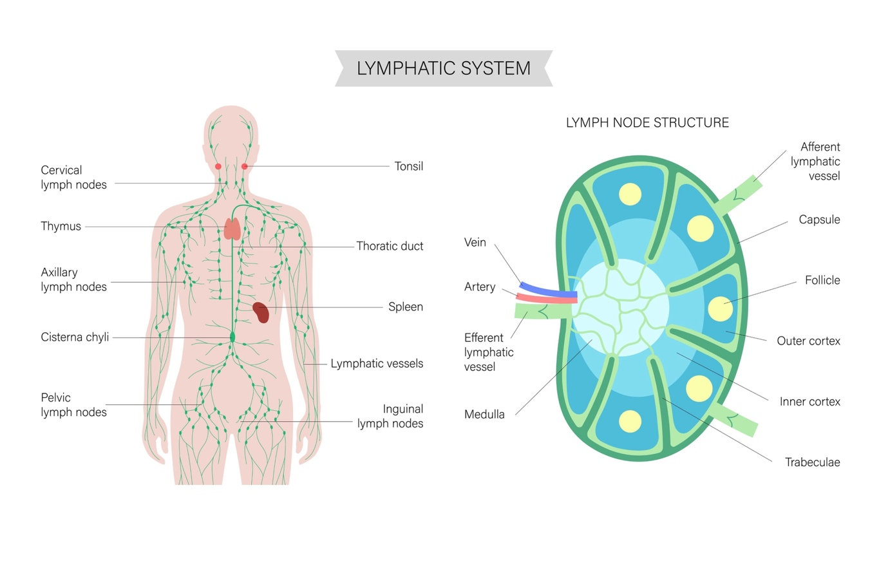

Partial Penectomy
Here is a sensitive and comprehensive patient information sheet for Partial Penectomy.
This surgery involves complex physical and psychological adjustments for patients. I have structured this guide to address their biggest fears—specifically regarding urinary and sexual function—with honesty and reassurance.
Patient Guide: Partial Penectomy
(Surgical Treatment for Penile Cancer)
What is a Partial Penectomy?
A Partial Penectomy is a surgical procedure to remove the end of the penis. It is performed when a tumor is found on the glans (head) or the distal shaft (end) of the penis. The goal of this surgery is to completely remove the cancer with a "safety margin" of healthy tissue while preserving as much of the penile shaft as possible.
Why is this necessary?
This surgery is the standard treatment for invasive penile cancer. While the idea of surgery is frightening, the priority is to cure the cancer before it spreads to the lymph nodes or other parts of the body. By removing only the affected portion, we aim to save enough length for you to maintain:
Urinary Function (standing to urinate).
Sexual Function (where possible).
The Procedure: What Happens?
Anesthesia: You will be under general anesthesia (asleep) or spinal anesthesia (numb from the waist down).
The Surgery: The surgeon removes the tumor and a margin of healthy tissue (usually 5mm to 1cm) to ensure no cancer cells are left behind.
Reconstruction: The remaining skin is carefully stitched over the end of the penis to create a stump. A new opening for the urethra (the neomeatus) is created so you can urinate freely.
Duration: The surgery typically takes 1 to 2 hours.
Life After Surgery: Your Function
1. Urination (Can I still stand?) Yes. In most cases of partial penectomy, enough length is preserved to allow you to stand while urinating. You may need to guide the stream slightly differently, but the mechanism remains the same. If the remaining length is very short, some men may find it cleaner to sit down to avoid spraying.
2. Sexual Function This is a major concern for all patients.
Erections: The nerves and blood vessels responsible for erections are located deep in the shaft and are usually preserved. Most men are still able to achieve an erection with the remaining shaft.
Sensation: While the glans (the most sensitive part) is removed, the skin of the shaft remains sensitive.
Intercourse: Depending on the length of the remaining shaft, penetration may still be possible. We encourage open communication with your partner as you heal and adapt.
Recovery: What to Expect
Hospital Stay: Usually 1 to 2 days.
Catheter: You will wake up with a catheter (a tube in the bladder) to drain urine. This keeps the new urinary opening dry so it can heal. It typically stays in for 1 to 2 weeks.
Pain: Most patients report that the pain is mild to moderate and well-controlled with oral medication.
The Look: The area will look swollen and bruised initially. This is normal. The stitches are usually dissolvable and disappear on their own.
Risks and Potential Complications
Meatal Stenosis (Narrowing): This is the most common long-term issue. As the new urinary opening heals, it can sometimes scar and become narrow, making the stream spray or feel tight. This can be fixed with a minor office procedure (dilation).
Bleeding/Hematoma: Collection of blood under the skin.
Infection: Redness or pus at the suture line.
Psychological Impact: Losing part of the penis can be emotionally difficult. We encourage you to speak to us or a counselor if you are struggling with body image or depression.
Pathology & Next Steps
About 1–2 weeks after surgery, we will review your Pathology Report. This tells us:
Margins: Confirming that the edges of the removed tissue are cancer-free.
Grade/Stage: How aggressive the cancer was.
Lymph Nodes: Based on this report, we will decide if you need further checking or treatment of the groin lymph nodes (using robotic surgery or scans).
⚠️ When to Call the Doctor
Contact us immediately if:
Blockage: You cannot pass urine, or the catheter stops draining.
Fever: Temperature over 101°F (38.3°C).
Heavy Bleeding: Bright red blood soaking through the dressing.
Opening: The wound edges appear to be separating.
Here is a patient-friendly "Catheter Care Guide" designed for men recovering from penile surgery (Partial Penectomy).
Since the catheter placement after a partial penectomy is critical for protecting the new urinary opening (neomeatus), these instructions focus heavily on hygiene and preventing traction to avoid damaging the delicate surgical repair.
Patient Guide: Caring for Your Catheter at Home
(After Penile Surgery)
What is this tube?
You have a Foley Catheter. It is a soft, flexible tube that drains urine from your bladder into a collection bag.
Why do I need it? After your surgery, the new urinary opening (neomeatus) needs time to heal without being irritated by urine flow. The catheter keeps the area dry and allows the stitches to hold securely.
How long? It typically stays in for 1 to 2 weeks. We will remove it in the clinic once we are sure healing is complete.
Daily Care Routine
1. Hygiene (Crucial for Healing)
Clean Twice Daily: Gently wash the area where the catheter enters the penis with mild soap and water.
Remove Crusts: You may see some dried blood or crusting around the tip. This is normal. Gently soak it off with a warm, wet washcloth. Do not scrub.
Shower: Yes, you can shower with a catheter! Let the soapy water run over the area, but do not submerge in a bathtub until your doctor says the wound is fully healed.
2. Securing the Tube (Preventing Pulling)
The Anchor: The catheter should be taped or strapped to your thigh (using a "StatLock" or leg strap). This prevents the tube from pulling on the fresh surgery site when you move.
Slack: Always leave a little "loop" of slack in the tubing so it doesn't tug when you stand up or sit down.
3. The Bags (Day vs. Night)
Leg Bag (Daytime): A smaller bag that straps to your calf. It allows you to move around discreetly under pants. Empty it when it is half full to prevent the weight from pulling.
Night Bag (Large): At night, switch to the larger drainage bag and hang it on the side of your bed.
Important: Always keep the bag lower than your bladder (below your waist) to prevent urine from flowing back into you.
Troubleshooting
Q: My urine is red/pink.
Normal: It is very common to see pink or light red urine, especially after walking or having a bowel movement. Drink extra water to flush it out.
Abnormal: If the urine looks like thick ketchup or has large clots that block the tube, call us.
Q: Urine is leaking around the tube (Bypassing).
This happens due to bladder spasms (the bladder trying to squeeze the balloon out). It is messy but usually not dangerous.
Tip: Check if the tubing is kinked. If spasms are painful, we can prescribe medication to relax the bladder.
Q: It feels like I need to urinate constantly.
This is the balloon of the catheter pressing on the base of your bladder. It tricks your brain into thinking you have to go. Try to relax; do not strain to push urine out.
⚠️ When to Call the Doctor
Contact us immediately if:
No Drainage: No urine has collected in the bag for 2 hours (and you are drinking fluids).
Fever: Temperature over 101°F (38.3°C).
Falling Out: The catheter accidentally comes out. Do NOT try to put it back in. Go to the ER or call us immediately, as the new opening can close up quickly.
Severe Pain: Constant, sharp pain in the penis or lower belly that is not relieved by medication.
R VEIL
Robotic Ilioinguinal Lymph Node Dissection
(Minimally Invasive Groin Lymph Node Surgery)
What is R-ILND?
Robotic Ilioinguinal Lymph Node Dissection (R-ILND) is a specialized surgical procedure to remove lymph nodes from the groin (inguinal) and pelvic (iliac) areas.
It is primarily performed to treat or stage cancers that have spread—or are at high risk of spreading—to these lymph nodes, most commonly:
Penile Cancer
Melanoma (Skin Cancer)
Urethral Cancer

Shutterstock
Why is this surgery necessary?
Cancers in the genital or lower limb region typically spread first to the lymph nodes in the groin. Removing these nodes helps us:
Stage the Cancer: Determine accurately if the cancer has spread.
Cure the Disease: Removing cancerous nodes can stop the disease from spreading further to other organs.
The Robotic Advantage (R-VEIL)
Traditionally, this surgery required a large incision (10–15 cm) in the groin crease. Because this area moves constantly and has many bacteria, open surgery often led to wound breakdown or infection.
The Robotic Approach (R-VEIL - Robotic Video-Endoscopic Inguinal Lymphadenectomy) changes this:
Technique: We make 3 small "keyhole" incisions (1–2 cm) on the thigh, away from the groin crease.
The Benefit: We work under the skin to remove the nodes without making a large cut. This preserves the skin and significantly reduces the risk of wound infection and healing problems.
Precision: The robot provides a high-definition 3D view, allowing us to carefully peel lymph nodes off blood vessels and nerves.
What Happens During Surgery?
Anesthesia: You will be under general anesthesia (completely asleep).
Duration: The surgery typically takes 2 to 3 hours per side.
The Procedure: The surgeon creates a working space under the skin of the thigh. The robotic arms are used to remove the packet of fatty tissue containing the lymph nodes (Inguinal nodes). If needed, the robot can also reach deeper into the pelvis to remove higher nodes (Iliac nodes) through the same small ports.
Drains: At the end of surgery, a small plastic tube (drain) is placed to prevent fluid buildup.
Risks and Complications
While robotic surgery drastically lowers wound risks, some side effects are specific to lymph node removal:
Lymphedema (Leg Swelling):
What is it? The lymphatic system drains fluid from your leg. Removing nodes can interrupt this flow, causing the leg to swell.
Risk: About 20–30% of patients experience some degree of swelling.
Prevention: Wearing compression stockings after surgery is the best way to manage this.
Seroma (Fluid Collection):
Fluid may build up under the skin after the drain is removed. This usually resolves on its own or can be drained with a small needle in the clinic.
Numbness:
You may feel numbness on the front or inner thigh. This is common and usually improves over time as nerves heal.
Recovery: What to Expect
1. Hospital Stay
Most patients go home in 1 to 2 days (compared to 5–7 days for open surgery).
You will be encouraged to walk the same day to prevent blood clots.
2. Drain Care
You will go home with the drain in place. It typically stays for 1 to 3 weeks.
You will be taught how to empty and measure the fluid daily. We will remove it in the clinic once the output is low (usually less than 30–50 ml per day).
3. Activity
Walking: Encouraged immediately.
Driving: Permitted once you are off pain medication and can move your leg comfortably (usually 2 weeks).
Work: Desk jobs: 2 weeks. Active jobs: 4–6 weeks.
⚠️ When to Call the Doctor
Contact us immediately if you experience:
Fever: Temperature higher than 101°F (38.3°C).
Infection: Redness, warmth, or pus around the incision sites.
Leg Issues: Sudden, painful swelling in one calf (sign of a blood clot).
Drain Issues: The drain falls out or stops draining while you still feel fluid sloshing under the skin.